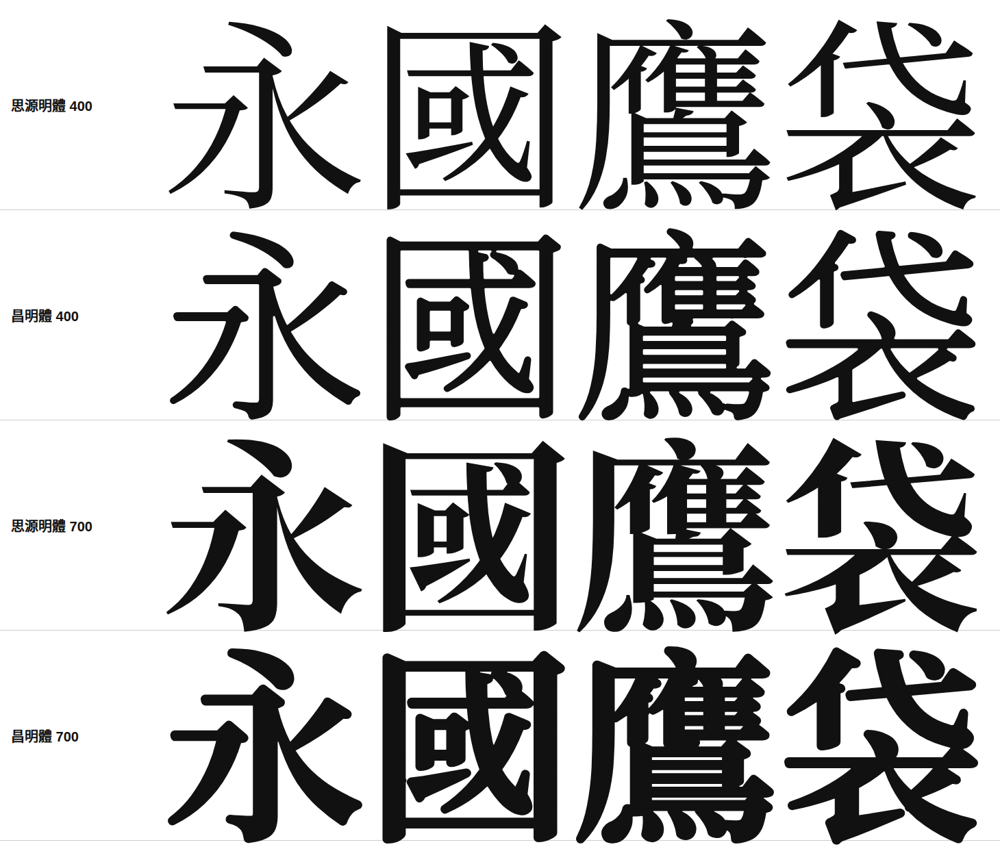

給繁體中文長文閱讀的人文明體。以思源明體為骨架，收斂了襯線的鋒芒、圓潤了筆畫的轉折，讓文字安靜下來，像一本印得很好的書。
明體是繁體中文最熟悉的閱讀字體，但多數明體為印刷而生。襯線銳利、橫細豎粗，放上螢幕便顯得緊張。昌明體選擇另一條路，保留明體的骨架與可讀性，把稜角磨圓、把對比壓低，讓版面讀起來更均衡、更現代。
它同時是一套為網頁而設計的字型。依常用字頻切成分片，瀏覽器只下載頁面實際用到的字。涵蓋台語、客語用字與羅馬字調號，並以 SIL OFL 1.1 自由授權，可自架、可修改、可再散布。

以「一」與「丨」實測豎橫筆畫粗細比，昌明體在兩個字重都明顯低於原字，內文更均衡，粗體更清晰。
| 字重 | 思源明體 | 昌明體 |
|---|---|---|
| 400 | 2.06 | 1.52 |
| 700 | 3.94 | 2.21 |
豎橫筆畫比，數字越低對比越小。上圖取自專案文件。
昌明體以思源明體為骨架，收斂了三角襯線、圓潤了筆畫轉折，並降低橫豎粗細的對比，讓長篇文字讀起來更平穩。英文 English text 與數字 0123456789 也保持一致的風格。罕用字同樣完整，如鑽齌遳蹤錸匉峁隳褰。
粗體使用 700 字重，對比同樣經過壓低，即使整段加粗也不會糊成一團。適合標題、引言，與內文中的重點強調。
以下場景皆以昌明體即時排版合成，非照片，因此每一筆襯線都是字型的真實樣貌。
依教育部兩部辭典的開放資料補齊用字。台語漢字 4,785 字、客語漢字 4,899 字，連同台羅、白話字的字母與調號、客語拼音的上標聲調，以及注音與方音符號。
缺字依序取自 Noto Serif CJK TC 與源樣明體，經相同的形態學處理，筆畫風格一致。
直接點進框內輸入自己的文字。
<link rel="stylesheet" href="/assets/changming/changming.css">
<link rel="stylesheet" href="/assets/changming/changming-tail.css" media="print" onload="this.media='all'">
<style>body { font-family: "ChangMing Serif TC", Georgia, serif; }</style>